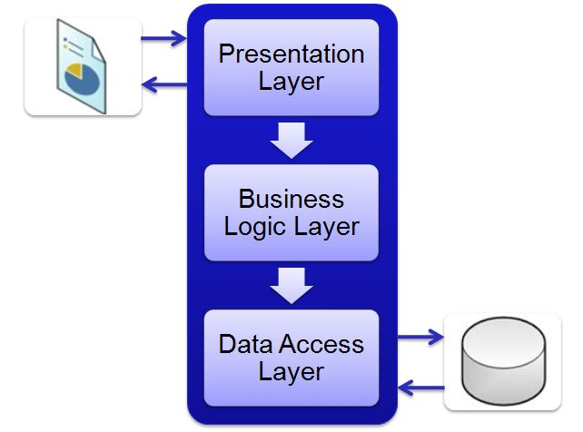

Er zijn drie soorten lagen waar de hard en software met elkaar samenwerken De drie lagen zijn de toepassingslaag, de logische laag en de fysieke laag. De communicatie tussen die laag is dat de software van de toepassingslaag kan alleen in contact komen als de fysiekelaag via de logischelaag gaat.
